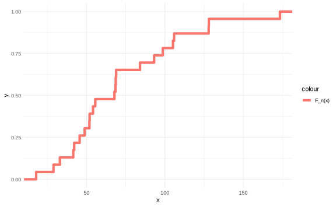
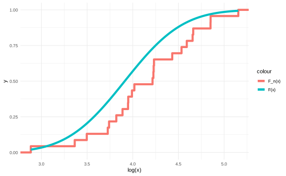
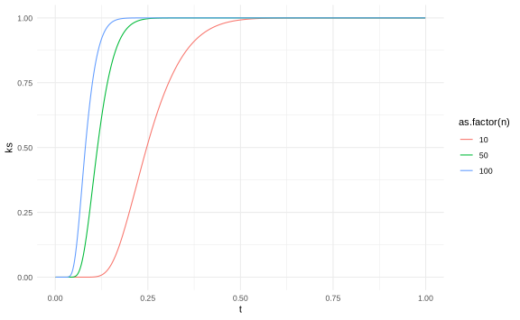
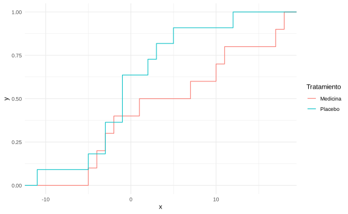

Capítulo 15 Pruebas de Kolmogorov-Smirnov
En capítulos anteriores, hicimos una prueba \(\chi ^2\) para determinar si cierto conjunto de datos se ajustaba a una distribución continua o no.
Una mejor prueba para este caso es la prueba Kolmogorov-Smirnov.
Sean \(X_1,\dots,X_n\sim F\), \(F\) una distribución continua. Asumimos que los valores observados \(x_1,\dots,x_n\) son diferentes.
Definición. Sean \(x_1,\dots,x_n\) los valores observados de la muestra aleatoria \(X_1,\dots, X_n\). Para cada \(x\) defina \(F_n(x)\) como la proporción de valores observados en la muestra que son menores o iguales a \(x\). Es decir, si hay \(k\) valores observados menores o iguales a \(x\),
\[ F_n(x) = \frac{k}{n}. \]
La función \(F_n(x)\) se conoce como la función de distribución de la muestra (empírica). \(F_n\) es una distribución a pasos con salto de magnitud \(\dfrac 1n\) entre los valores \(x_1,\dots,x_n\). Se puede expresar como
\[F_n(x) = \begin{cases} 0 & \text{si } x<X_{(1)}\\ \displaystyle \dfrac 1n \sum_{i=1}^n 1_{\{x_i\leq x\}} & \text{si } X_{(1)}\leq x<X_{(n)}\\ 1 & \text{si} X_{(n)}\geq x \end{cases} \]
Como \(\{x_i\}_{i=1}^n\) son independientes, \(\{1_{\{x_i\leq x\}}\}_{i=1}^n\) son independientes. Entonces, por la ley de grandes números
\[ F_n(x) = \dfrac 1n \sum_{i=1}^n 1_{\{x_i\leq x\}} \xrightarrow[n\to\infty]{\mathbb P} \mathbb E[1_{X_i\leq x}] = F(x) \]
por lo que \(F_n(x)\) es consistente.
Ejemplo
x <- c(
17.88, 28.92, 33, 41.52, 42.12, 45.6, 48.8, 51.84, 51.96, 54.12, 55.56,
67.8, 68.44, 68.64, 68.88, 84.12, 93.12, 98.64, 105.12, 105.84, 127.92,
128.04, 173.4
)
df <- as.data.frame(x)Para este ejemplo tenemos que \(F_n(x)\) se ve de la forma:

Y en los capítulos anteriores hicimos una comprobación de que los parámetros \(\mu =3.912\) y \(\sigma ^{2} = 0.25\) se ajustaban bien para los log-valores. En este caso podemos comprobar este ajuste
ggplot() +
stat_ecdf(
data = df,
mapping = aes(log(x), color = "F_n(x)"),
size = 2
) +
stat_function(
data = data.frame(x = c(3, 5)),
fun = pnorm,
aes(color = "F(x)"),
size = 2,
args = list(mean = 3.912, sd = sqrt(0.25))
) +
theme_minimal()
La prueba de Kolmogorov-Smirnov está basada en el siguiente teorema.
Teorema (Lema de Glivenko-Cantelli)
Sea \(F_n(x)\) la distribución empírica de una muestra \(X_1, \dots , X_n\) provenientes de la distribución \(F\). Defina \[ D_n = \sup_{-\infty<x<\infty}|F_n(x)-F(x)| \] Entonces
\(D_n\xrightarrow[]{\mathbb P} 0\). \(\qed\)
Esto quiere decir que si una distribución empírica \(F_n(x)\) realmente es tomada de la distribución teórica \(F(x)\) entonces la diferencia de estas dos van a converger en probabilidad cuando \(n \to \infty\).
La prueba de esto no es parte del curso, por lo que la omitiremos.
15.1 Prueba de Kolmogorov-Smirnov para una muestra
La pregunta que responde esta prueba es
¿Será que \(F = F^*\), donde \(F ^{*}\) es una distribución hipotética?.
La hipótesis es \[ H_0: F = F^* \text{ vs } H_1: F\neq F^* \]
En este caso se define el estadístico
\[
D_n^* = \sup_{-\infty<x<\infty}|F_n(x)-F^*(x)|
\]
Nota: Si \(H_0\) es cierto, \(D_n^*\) no depende de \(F^*\).
Note que si \(Z_i = F^*(X_i)\), \(i=1,\dots,n\) \((X_1,\dots,X_n \sim F)\). Vea que
\[ \mathbb P(Z_i\leq z) = \mathbb P(F^*(X_i)\leq z) = \mathbb P(X_i\leq ((F^*)^{-1}(z))) = z \]
Entonces \(Z_1,\dots, Z_n \underset{H_0}{\sim} \text{Unif}(0,1)\)
Considere la hipótesis \(H_0: G = \text{Unif}(0,1)\) donde \(G\) es la distribución de \(Z_i\). Entonces
\[D_n^{*,G} = \sup_{0<z<1}|G_n(z)-G^*(z)| = \sup_{0<z<1}|G_n(z)-F_{\text{Unif}(0,1)}(z)| = \sup_{0<z<1}|G_n(z)-z|\]
Observe que
\[G_n(z) = \dfrac 1n \sum_{i=1}^n 1_{\{Z_i\leq x\}} = \dfrac 1n \sum_{i=1}^n 1_{\{F^*(X_i)\leq z\}} = \sum_{i=1}^n 1_{\{X_i\leq (F^*)^{-1}(z)\}} = F_n((F^*)^{-1}(z))\]
Entonces,
\[D_n^{*,G} \underset{H_0}{=} \sup|F_n(x)-F^*(x)| = D_n^*\]
por lo que \(D_n^*\) no depende de \(F^*\) bajo \(H_0\). \(\qed\)
De manera práctica si la distribución \(F_n(x)\) es cercano a \(F ^{*}\) entonces \(D_n ^{*}\) será cercano a 0.
Entonces la podemos rechazar la hipótesis nula \(H_0\) si \(n^{\frac{1}{2}}D_n^*\geq c\), para algún valor \(c\) particular.
Este valor en particular se debe estimar a partir de la distribución de Kolmogorov-Smirnov.
Teorema (de Kolmogorov-Smirnov (1930)). Si \(H_0\) es cierto, para \(t>0\), \[\lim_{n\to \infty} \mathbb P(n^{1/2}D_n^*\leq t) = 1-2\sum_{i=1}^\infty (-1)^{i-1}e^{-2i^2t^2} = H(t).\]
Rechazamos \(H_0\) si \(n^{1/2}D_n^*\geq c\), \(n\) grande. Para un nivel de significancia \(\alpha_0\), \(c = H^{-1}(1-\alpha_0)\), donde \(H\) denota el valor de la parte derecha de la ecuación anterior.
La función \(H(t)\) es algo complicada de estimar, y sus cuantiles lo son aún más. Estos normalmente son definidos a través de métodos números que están fuera del alcance del este curso. La siguiente tabla muestra el conjunto de valores estimados para cada \(t\)
Los valores más comunes de cuantiles para las pruebas son
| \(\alpha\) | \(H^{-1}(1-\alpha)\) |
|---|---|
| 0.01 | 1.63 |
| 0.05 | 1.36 |
| 0.1 | 1.22 |
Solo como ilustración, el paquete KSgeneral tiene programada la estimación de
\(\mathbb P (D_n \leq t)\). En este gráfico se presentan algunos ejemplos con
\(n\) igual a 10, 50 y 100.
library(KSgeneral)
t <- seq(0.001, 0.999, length.out = 1000)
df <- rbind(
data.frame(t, ks = Vectorize(cont_ks_cdf)(t, 10), n = 10),
data.frame(t, ks = Vectorize(cont_ks_cdf)(t, 50), n = 50),
data.frame(t, ks = Vectorize(cont_ks_cdf)(t, 100), n = 100)
)
Ejemplo:
En el caso de las partes mecánicas quisiéramos saber si los log-valores siguen o no una distribución normal.
Dado que queremos comparar estos valores con un \(N (\hat{\mu } , {\sigma^{'}}^{2})\), entonces
##
## One-sample Kolmogorov-Smirnov test
##
## data: log(x)
## D = 0.091246, p-value = 0.9815
## alternative hypothesis: two-sidedNote que esta localización es muy importante ya que si se quisiera comparar con una distribución \(N(0,1)\) el resultado es diferente.
##
## One-sample Kolmogorov-Smirnov test
##
## data: log(x)
## D = 0.99803, p-value = 4.441e-16
## alternative hypothesis: two-sided15.2 Prueba de 2 muestras
Suponga que se tiene \(X_1,\dots,X_m\sim N(\mu_1,\sigma^2)\) y \(Y_1,\dots,Y_n\sim N(\mu_2,\sigma^2)\) y se desea saber si ambas muestras tienen la misma distribución.
Una opción es probar que \[ H_0:\mu_1 = \mu_2 \text{ vs } H_1: \mu_{1} \neq \mu_{2} \]
Uno de los supuestos fuertes para este tipo de pruebas es la normalidad.
Otra opción es decir que
\[ H_0: F_1 = F_2 \text{ vs } H_1: F_{1} \neq F_{2} \]
donde \(F_1\) es la distribución de \(X\) y \(F_2\) la de \(Y\).
Igual en este caso estamos probando dos distribuciones normales, pero ¿Es posible del todo quitar el supuesto de normalidad?
Es decir, para \(X_1,\dots,X_m\sim F\) y \(Y_1,\dots,Y_m\sim G\) continuas, sin valores en común, probar \(H_0: F(x) = G(x)\), \(x \in \mathbb R\).
Considere \[ D_{mn} = \sup_{-\infty<x<\infty}|F_m(x)-G_n(x)| \]
Se tiene por el teorema de Glivenko-Cantelli que \(D_{mn}\xrightarrow[]{\mathbb P} 0\), \(m,n\to\infty\) cuando \(H_0\) es verdadera
Para el caso de dos muestras se puede probar que si \(H(t)\) es la distribución límite en el caso de una muestra y \(t>0\), entonces se cumple que
\[\lim_{m,n\to \infty} \mathbb P \left( \left( \dfrac{mn}{m+n}\right)^{\frac 12} D_{mn}\leq t\right) = H(t)\]
En este caso se rechaza la hipótesis nula si \(\left(\dfrac{mn}{m+n}\right)^{\frac 12}D_{mn} \geq H^{-1}(1-\alpha_0)\).
Ejemplo Suponga que se tienen dos grupos de personas a las cuales a unas se les dio un tratamiento para la presión arterial y al otro se le dio un placebo.
Al se midieron las diferencias entre las presiones arteriales al cabo de 12 semanas de tratamiento.
Los resultados fueron estos
Medicina <- c(7, -4, 18, 17, -3, -5, 1, 10, 11, -2)
Placebo <- c(-1, 12, -1, -3, 3, -5, 5, 2, -11, -1, -3)La pregunta es si ambos conjuntos de datos vienen de la misma distribución.
##
## Two-sample Kolmogorov-Smirnov test
##
## data: Medicina and Placebo
## D = 0.40909, p-value = 0.3446
## alternative hypothesis: two-sidedEn este caso rechazamos la hipótesis nula de que ambas distribuciones son iguales con un nivel de \(\alpha \geq 0.346\).
df <- rbind(
data.frame(x = Medicina, Tratamiento = "Medicina"),
data.frame(x = Placebo, Tratamiento = "Placebo")
)
ggplot(df) +
stat_ecdf(aes(x, color = Tratamiento)) +
theme_minimal()